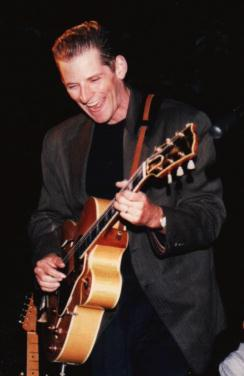
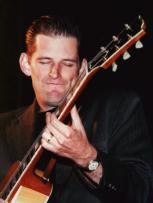

Когда я в последний раз встречалась с Honeyboy Edwards, он искренне посоветовал мне: "остерегайся маленьких и тихих - от них все неприятности!" Хотя мы говорили о ситуациях на улицах, его совет всплыл у меня в голове во время концерта с участием Рика Холмстрома. Холмстром, 33-х летний гитарист из группы Rod Piazza - the Mighty Flyers, может показаться маленьким на сцене рядом со своим коллегой басистом Bill Stuve, но его гитарная мощь просто раздавит вас в лепешку.
Его игра местами напоминает мне легенду музыки West Coast - Джуниора Ватсона (Junior Watson). И это не случайно, ведь Джуниор - один из учителей Холмстрома. Но игра Джуниора лично мне кажется менее гладкой и сдержанной, в отличие от игры Холмстрома.
Холмстром вырос на Аляске. Его отец оставил работу ди-джея когда Рику было шесть лет. Он всегда любил корневую блюзовую музыку, и стремился разделить эту любовь с сыном. "Я приносил домой то, что слушали дети моего возраста в то время, а он мог остановить меня на середине фразы из песни и сказать: "Только послушай. Это Чак Берри!" или "Это же вещь Литтл Ричарда!". Как и все дети, Рик считал своего отца эксцентричным до тех пор, когда отец не взял его на концерт Чака Берри в возрасте 12-и лет. "Я все понял. После этого я стал его слушать!" Несмотря на это, Рик забросил игру на гитаре в третьем классе и занялся спортом.
Окончив школу, Рик перебрался в Южную Калифорнию, чтобы поступить в колледж, где начал играть в гаражной группе. Он стал возвращаться к своей музыке, а в это время умер его отец... за шесть месяцев до смерти отца Рик начал играть профессионально". Каким то странным образом его смерть окончательно подтолкнула меня к этому". Когда Рику был 21 год, блюзовые клубы в Лос-Анжелесе располагались в опасных кварталах, но это не могло удержать Холмстрома. "Я все больше и больше втягивался". Он играл со Smokey Wilson, Johnny Dyer, William Clarke и Junior Watson, в конце концов, стал одновременно работать в группах William Clarke и Johnny Dyer, после чего объединил усилия с Rod Piazza and the Mighty Flyers. Когда Flyers делают перерыв в гастролях, Холмстром играет в своей собственной группе "The Holms Tones", а его гитару можно услышать на записях множества блюзовых музыкантов стиля West Coast. Его сольный альбом "Lookout!" (BlackTop, cd-bt-1125) звучит очень свежо и является замечательным свидетельством любви Холмстрома к старым мастерам, в сочетании с современной атакой.
Первая любовь Холмстрома - свинг на полуакустической гитаре. Я убеждена, что учеба у таких яростных новаторов как Junior Watson, Bill Clarke и Rod Piazza - музыкантов, которые никогда не стали бы исполнять музыку по заказу, дала ему самую лучшую базу для дальнейшего развития. Он слишком молод и скромен, чтобы обладать тем вкусом и мастерством, которые у него есть. Honeyboy был прав - остерегайся маленьких и тихих.

CATHI: Блюзовая жизнью Лос-Анжелесса - как нежданный десерт.
RICK: (Смеется) Да, хорошо сказано.
CATHI: Я слышала ты шатался по опасным кварталам, чтобы попасть в блюзовые клубы.
RICK: М-м-м, все еще шатаюсь (смеется). Это был совершенно другой мир, впечатляющий. Я ходил в клуб Smokey Wilson's, или в местечко под названием Pure Pleasure Lounge, или в Babe's and Rick's, здесь, в Лос-Анжелесе. Это были заведения из разряда тех, куда не всякий рискнет заглянуть. Из тех, что не имеют вывески снаружи. Надо было знать, как туда попасть. Платишь 3 бакса и получаешь столько жареной курицы с зеленью, сколько захочешь. И если ты не сопляк, то можно разобраться что к чему. У меня не сильно-то получалось, но я учился.
CATHI: Итак ты подружился с Jr.Watson. У меня от этого парня просто голова кругом, какой музыкант! Он, кажется, никогда не играет дважды одно и то же.
RICK: Еще бы, он как гуру для всех гитаристов West Coast блюза.
CATHI: Твоя игра напоминает мне его: рискованная, как езда на американских горках, но ты все таки уверен что приземлишься в конце соло (смеется).
RICK: (Смеется) Спасибо. Я все еще не всегда понимаю как, но он умудряется все это проделывать. Когда я впервые увидел Джуниора с Флайерами, я сказал: "Я никогда раньше не слышал ничего подобного!" Я обожаю его индивидуальность, его никогда ни с кем не спутаешь.
CATHI: Совершенно верно. Вот что я собиралась тебя спросить. Почему ты не увлекся другой музыкой, которой всегда увлекается молодежь? Ты слушал Лед Зепплин, но тебе больше нравились старички?
RICK: Меня это никогда не цепляло, и всегда казалось фальшивым. Знаешь это чувство, когда все уж слишком, все через край. Не знаю. И потом, когда я слушал музыкантов типа Smokey, Johnny Dyer, Rod (Piazza), William Clarke, Junior, ну не знаю, в их игре всегда была такая грубость, ошибки, грязь, понимаешь? (Смеется) Как добрый ломоть кукурузного хлеба.
CATHI: (Смеется) Знаю. Этого не описать. Я думаю это "чувство", но не обычное.
RICK: Ну да, точно. Но когда я втягивался в это дело, свинговой сцены как таковой не существовало. Я не знал, ЧТО собой представляла эта музыка. Она не была чистым блюзом, или рокабили, или свингом, или рок-н-роллом, или даже джазом. Было чертовски здорово слушать все эти бэнды, которые звучали непривычно. Я возил с собой гитару на концерты и слушал, а в перерывах выходил к машине, вытаскивал ее и пытался воспроизвести то, что только услышал.
CATHI: (Смеется) Ты вытаскивал гитару из машины в этих небезопасных кварталах?
RICK: Ну да, в любых кварталах.
CATHI: Что ты думаешь о той части страны и о музыке, которая там родилась? Тебе не кажется, что сочетание R&B и джаза произвело на свет этот саунд?
RICK: Ну, там столько всего! Вот что я скажу - я говорил и Роду и Биллу Кларку, когда играл с ним, и Джонни:. Это просто блюз, но он впитал в себя немного больше от T-Bone или Tiny Grimes, или от Louis Prima, чем блюз в других частях страны. Так же как Техасские и Чикагские бэнды отличались чем-то своим, так же как отличались East Coast бэнды. Но есть особенность, которая, мне кажется, заставляет здешнюю музыку звучать с большим свингом - это то, что ритм-секция играет особенным образом. С какой-то плавающей пульсацией.
CATHI: Итак после гаражной группы ты занялся блюзом?
RICK: Да, играл с William Clarke. У меня была группа, состоявшая из моих приятелей. У них был свой основной гитарист, а я в течение года играл аккомпанемент. Потом я стал посещать местечко под названием "Starboard Attitude," где William Clarke постоянно играл по пятницам, субботам и воскресеньям, если не был на гастролях. Я стал играть на подмене, и время от времени он ставил меня на ритм гитару. Проходит месяц, и я начинаю играть все больше и больше соло. В общем, Билл вроде бы учил меня, как нужно играть: "так не играй, играй вот так!" О ритме он мог просто сказать: <Это не то!" И приходилось ковырять до тех пор пока не получалось так, как надо.
CATHI: Я тут подумала, как это здорово, когда кто-то из старых музыкантов находит время, чтобы поучить тебя, когда ты набираешь обороты. Эта та важная часть роста музыканта, о которой не много говорят.
RICK: Да, это правда, но очень часто это происходит не так вежливо, как кажется (смеется). Bill Clarke был по-настоящему требовательным лидером. Мы никогда не репетировали, никогда не играли одну и ту же вещь одинаково дважды. Бил был совершенно спонтанным человеком, и это меня научило правильно слушать. А потом я учился слушать, играя с Джуниором. Он делал мне небольшие подсказки. "Когда слышишь, что харпер взял одну ноту и держит ее, поиграй в том месте небольшие ритмические фигуры. НО когда слышишь, что харпер играет много - играй как можно проще". Я научился у них очень многим мелочам, но обычно учеба происходила так: "Эй! Так не играй!!!" (смеется) Ничего вроде такого не было: (мягким голосом) "Рик ... вот несколько дельных замечаний".
CATHI: А в чем была разница между саундом William Clarke в сравнении с саундом Junior Watson?
RICK: Ну вот, насчет Билла... это относится и к Джуниору (а он - ГЕНИЙ!), Билл мог просто оборвать меня, если я начал не так, как нужно. У меня была такая любимая фраза, которую я любил время от времени вставлять в соло. Однажды я начал с нее соло, а потом повторил то же на следующий вечер, я помню, что он просто оборвал меня и сам стал играть соло. Когда мы отыграли весь сет, я сказал ему "Что я такого сделал? Чего это ты меня оборвал" Он сказал "Да ты же играл это уже вчера! Я не хочу слышать одну и ту же идею дважды". На самом деле это было очень полезно, потому что нужно было всегда придумывать что-то новое, не зная, как он отреагирует. Если у тебя было много идей, и в тебе был огонь, он стоял за тебя на все сто, но как только ты становился вялым, он обязательно давал тебе понять, что ты делаешь не так.
CATHI: Это наверное самая лучшая школа. Легко начнешь различать шаблонные фразы, когда играешь в бэнде долго. Замечательно иметь таких учителей.
RICK: Да, а еще они научили меня отношению к музыке. Johnny Dyer и Smokey Wilson учили меня играть от души, по-настоящему. Играть так, чтобы музыка звучала реально, а не так, будто ты разучил это в своей спальне.
CATHI: И как ты этому научился, Рик?
RICK: (Смеется) Не знаю! Я все еще пытаюсь учиться этому! Пытаюсь играть по- настоящему..., ну, это трудно выразить словами, но это можно почувствовать. Знаешь, когда это получается, ты пытаешься, чтобы получилось еще и еще, намного лучше, чем раньше. (Смеется). У меня были по-настоящему хорошие (смеется) учителя. Я играл с Биллом три года, мы все время гастролировали. Во время большей части гастролей Билла я был в его бэнде. Потом я ушел и начал играть с Johnny Dyer в 91-ом. Мне не хватает игры Билла. Когда он бросил пить, он стал играть с ЖАРОМ. В голове у него прояснилось, и он замечательно играл и пел. Я видел его в студии за два дня до смерти. Он зашел забрать какие-то записи, а я записывал что-то для Rod Piazza, он говорит (имитирует хриплый голос) "Рик, парень, у меня полно новых идей. Я запишу кучу материала, который будет звучать СОВЕРШЕННО ПО-ДРУГОМУ!" Он все повторял "СОВЕРШЕННО ПО-ДРУГОМУ!" Я думаю, он собирался изменить курс в сторону джаза. Как все-таки жаль...
CATHI: Итак ты начал играть с Johnny Dyer? В дуэте?
RICK: Нет, в составе полного бэнда, но иногда мы работали и дуэтом. Поначалу почти все выступления были в полном составе. Ну, в общем, закончилось все тем, что я добывал концерты в клубах и нанимал группы для выступлений, а Джонни пел и играл на гармонике. Просто потому, что он в то время был водителем грузовика. Мы были на подменах у Red Devils по понедельникам, когда они выезжали на гастроли. Все это было забавно - эта компания ребят пыталась играть и петь как Johnny Dyer, а Johnny Dyer был у них на подмене!
CATHI: Так ты записал два альбома с Джонни? А как он воспринял твой переход во "Flyers?"
RICK: Ну, Джонни 35 лет водил грузовик, устроил детей в колледж, все как надо. Потом он ушел на пенсию, но у него была больная спина. Мы много колесили, и я не думаю, что Джонни осознавал объем работы. Когда он вновь отправился на гастроли со своей больной спиной после стольких лет за рулем грузовика, ему снова пришлось засесть в минивэн, а пользы ему от этого было мало. Спина снова начала его доставать, он болел и пропускал некоторые выступления. Он стал понимать, что трех-четырех недельные поездки шли ему во вред. Ему было легче выехать на недельку или полететь самолетом, а таким образом группу вместе удержать трудно. Эти проблемы только начали возникать, когда Род неожиданно говорит мне, что я ему нужен. А потом были мучения - да, было очень трудно. Я пошел к Джонни, мы долго говорили, а он просто сказал: <Холмс, ты должен согласиться> Он всеми руками был за то, чтобы я сделал это, потому что не хотел удерживать меня, не зная, сможет ли он выдержать тот график выступлений, который был нужен мне. А я хотел играть. Было трудно, но в итоге все хорошо разрешилось. Мы все еще играем вместе.
CATHI: Я знаю что ты записывался с ним. Значит, ты занимаешься проектами помимо работы с Родом?
RICK: Когда позволяет время - да. Я начал петь пару лет назад, у меня своя группа и я люблю в ней играть по будням.
CATHI: Наверное весело работать с людьми, которые играют с таким же драйвом.
RICK: Да, еще КАК (Смеется)! Вовсе НЕ весело, когда драйва нет! Я думаю, Род - феноменален. Я тут рассказывал обо всех тех, у кого учился, но рассказ о самом лучшем я приберег напоследок. Я говорю это не из-за того, что он мой босс. Я многому у него научился, потому что он мыслит концептуально. Он думает обо всей группе, и он слышит ВСЕ. То есть, когда играешь, ты концентрируешься на себе и, может быть, на еще одном инструменте. Род же слышит все. На самом деле! Он замечает, когда Стив сменит тарелку, или когда я играю через другой усилитель. Он подойдет к тебе после первого сета и скажет: <А-а, так у тебя обновка, а я думаю, что тут такое :да, звучит здорово, теперь в звуке больше того-то и того-то, я заметил>.
CATHI: Я тоже заметила, что он позволяет каждому делать, что ему нравится.
RICK: Да, я думаю Род давно понял, что таким образом все в группе будут довольны, и это определенно поддерживает интерес зрителей. Сложно быть блюзовым музыкантом и пытаться зарабатывать этим на жизнь. Род много лет реально работает, он все анализирует. Он записывает выступления; нам кажется, что группа движется вперед, все замечательно, а он находит еще что-то, над чем нужно работать. Он пытается, чтобы все было четко, слаженно и увлекало слушателя, но в то же время всегда есть свобода действий и раскованность в игре, есть взаимодействие. У нас большой репертуар, иногда мы делаем остановки, иногда выступление проходит в более медленном темпе, мы играем чистый блюз и все происходит очень спонтанно.
CATHI: Кажется вы своим шоу добиваетесь невероятного эффекта. Интересно, вы так часто исполняете эту программу, что все отработано до мелочей или это просто такой стиль?
RICK: Вовсе нет. Все что у нас есть - это только ритм. Многие думают, что это одна и та же программа, только потому, что слышат "Little Southern Lady" в конце выступления. Наше выступление как прилив и отлив - начинается с одним настроением, потом переходит в другое; у каждого есть возможность выразить себя. У меня есть "своя" песня, у Билла "своя". Но я никогда не уверен, что буду играть, потому что не знаю, что будет звучать до моего номера. Поэтому приходиться составлять свой репертуар и постоянно размышлять: "Так, мы только что отыграли медленный блюз, если сейчас моя очередь, то я сыграю... э-э нет, он решил сыграть другую песню, в быстром темпе, так что если играть мне, то я выберу вот эту". Род здорово делает плавные переходы от одной песни к другой. Он в этом мастер. Все происходит без задержек.
CATHI: Расскажи о своих инструментах. Я заметила твою страсть к полуакустическим инструментам.
RICK: Да, я использую три полуакустические гитары. Это Harmony, Gibson ES150, и Gibson L5. Ну и еще есть Telecaster - когда нужен звук погрубее.
CATHI: Ты так мягко играешь на полуакустических гитарах, но можешь и на Телекастере зарубать.
RICK: (Смеется) Ну, вот и здорово, Я просто пытаюсь все сделать так, чтобы был контраст. Многим хотелось бы слышать только Фендер. Большая часть блюзовых слушателей привыкла слышать Стратокастер, или какую-нибудь другую громкую и резкую гитару. И когда я выхожу со своей полуакустикой, им не терпится услышать тот, другой звук. Я знаю об этом. Ну, если, конечно, играю не для любителей традиционного блюза. А еще я использую струны GHS калибра 12-54. Раньше играл на струнах потолще - 13-60, но однажды, во время концерта в Канаде было холодно, и я стал чувствовать пронизывающую боль в руке, это меня напугало. Так что я от них отказался. Здорово же я испугался.
CATHI: Расскажи, какое еще оборудование ты используешь? Что у тебя за усилители?
RICK: У меня пара усилителей Victoria: их для меня сделали в Чикаго. Они новенькие.
CATHI: Они сделаны по старым схемам?
RICK: Вроде бы да. Оба моих усилителя - это воплощение звука, который мы задумали вместе со специалистом из Victoria. Смахивает на "Frankensteins." Лампы и старый вариант намотки - такой же чистый звук, но чуть погромче. Еще есть bassman 410, и усилитель размером как twin, с двумя 12-ти дюймовыми динамиками. Twin немного отличается от обычного Twin. Он по звуку больше напоминает звук усилителя конца 40-ых или начала 50-ых. Вот такой мне нужен звук - большой, круглый, жирный.
CATHI: Классный у тебя конечно звук, ты наверное долго над ним работал.
RICK: Еще бы, это бесконечный процесс.
CATHI: Вот еще что о тебе часто говорят, и я сама это заметила в твоей игре - это "экономия выразительных средств" Лучше меньше, да лучше?
RICK: Да. Лестер Янг редко играл больше 2 проведений в блюзе, а если играл балладу, то его соло были очень короткими, но настоящими шедеврами.
CATHI: А что у тебя с харперами?
RICK: (Смеется) Ну, не знаю. Я просто начал играть с ними, и потом, вот еще какая вещь - здесь на Западном побережье, многими большими составами руководят именно харперы, они то больше всего и работают, так что естественно начнешь играть с ними.
CATHI: Мне кажется, чтобы играть с харпером, надо быть музыкантом особого склада. Аккомпанировать бывает сложно - вытягивать всю ритмическую часть.
RICK: Ну, я не из гитарных героев, возглавляющих гитарные трио. Тут все по-другому. Мне нравится аккомпанировать Роду. Род стоит на верхней ступеньке среди харперов; он просто лучше всех (смеется), как мне кажется, когда играет на своем инструменте. Так что с таким парнем играть здорово. Когда все складывается как надо - это классное чувство.
CATHI: Ты говорил, что тебе нравилось играть с харперами, потому что они слушают игру саксофонистов. Это имеет отношение к вокальной/мелодической линии. Как ты думаешь, твоя игра основывается на этом?
RICK: Определенно!! Тут прямая связь с игрой Билла Кларка и Джонни (Dyer). Джонни играл очень экономно. Он пользовался своей гармоникой, как острым соусом. И говорил: "Я просто добавляю немного приправы, Холмс!" Мне нравится слушать мелодию с паузами, с воздухом. Может быть еще повторяющуюся фразу, которая как бы увлекает за собой слушателя. Если играешь "Don't be mad at me, I ain't mad at you", потом держишь небольшую паузу, а потом заряжаешь пару повторяющихся фраз типа "Тамта-Тамта-Тамта", потом еще один мелодический оборот, а за ним несколько аккордов - это подстегивает интерес. И Род всегда говорил об этом. Мы сидим и прослушиваем свои записи, а он: "Все здорово, но ты тут наиграл кучу одиночных нот. Может, стоит попробовать больше поиграть аккордами, или сделать там брейк, и как бы разбавить все". У него всегда появляются мысли, которые открывают тебе глаза.
CATHI: Ну а когда ты играешь, ты осознаешь, что думаешь обо всем этом, или ты просто все это уже усвоил?
RICK: И то, и другое, но большей частью все происходит неосознанно. Я пытаюсь много не думать, когда играю. Если начнешь думать, скорее всего, будешь мешать себе. Но я все-таки думаю об этом, потому что знаю, что Род сидит и слушает. Он производит такое воздействие, что мне хочется играть так хорошо, как я только способен.
CATHI: Ну а чем ты собираешься заняться в будущем?
RICK: Ну, это вопрос с подтекстом! (смеется). Нет, я люблю играть в этом бэнде, и хочу продолжать это делать. Я буду продолжать делать свои собственные записи. У меня только что вышел альбом с Finis Tasby на Evidence Label. Он замечательный певец: В общем вот в таком духе...или вот Billy Boy Arnold выпускает записи каждый год или около того, и все это здорово. НО в то же время я получаю удовольствие от работы с Родом и я ОЧЕНЬ многому у него учусь. Когда-нибудь мне захочется заниматься своей музыкой, но это время еще не пришло. Не буду торопить события.
CATHI: Есть что-то, что ты особенно хотел бы сказать всем своим слушателям?
RICK: (Смеется) Не знаю, следите за моими новыми записями!
CATHI: (Смеется) Ну ладно. Ты когда-нибудь устаешь от музыки, Рик?
RICK: Иногда полезно взять пару выходных. Я никогда по-настоящему не устаю. Иногда уши устают от шума, от объема информации, но обычно мне удается сорваться ненадолго и отдохнуть.
CATHI: Мне тоже, вот только была бы у меня жена...
RICK: (смеется).
Статья Cathi Norton
Перевод Арсена Шомахова
Перепечатано из Delta Snake